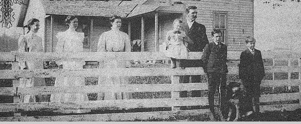

Sometimes we forget that many of our ancestors built for themselves lives of beauty, peace, and independence lives that trapped as we are in a better things for better living through chemistry, keep up with the Joneses charade we can only barely imagine, and perhaps never truly duplicate. We also forget how much of our time is spent in relearning skills that were almost second nature to our grandparents.
It's a welcome event, then, when a survivor of frontier America gives us such a vivid look into her childhood as Lillie Baxter does in the following account. (This, by the way, is Lillie's first attempt at writing a magazine article, and we certainly hope it isn't the last.)
Lillie is now a hale and hearty 89 years old and enjoys recounting the varied experiences of a busy life both during her childhood in the Tennessee mountains and in the Oklahoma Territory, to which she moved with her family in 1906.
We hope you'll enjoy, as much as we did, this account of "Them That Did It." THE EDITORS.
I was born in Mulberry Gap, Tennessee in 1886, the oldest of three sisters and three brothers. We lived on the side of the Cumberland Mountains, eight miles from Cumberland Gap. The cornerstone that marks the junction of Tennessee, Kentucky, and Virginia is on top of the mountain there.
Middlesboro, Kentucky was also eight miles from our house. There were saloons in Middlesboro, and it wasn't uncommon to see men, who had gone there on horseback to get whiskey, returning with a gallon jug hung on each side of their saddles.
We always had a comfortable home, with a fireplace and cook stove for heat, coal oil (they call it kerosene nowadays) lamps for light, and homemade carpets on the floors. Not all families in our neighborhood were as fortunate as we were some of them had dirt floors.
Our homestead was a wonderful place to grow up. There was always fresh air, flowers, freedom, and quiet and a lot of beautiful trees like walnut, cedar, and pine. We gathered hickory nuts and chestnuts, although the chestnuts didn't open until after the first frost. Then the burr would open up (it was sticky and contained two chestnuts).
The maple trees were tapped in the spring. We would put containers under the tap to get the sap, then gather it every morning and boil it down to make maple sugar. Another thing we did in the spring when the sap came up was gather willow sprouts and skin the bark off, then take them to an old woman who wove them into baskets, like the ones we now buy in the stores.
Everyone in our family worked. Each of us had a job. The little ones would carry in chips and wood to burn in the fireplace and cook stove. We all got up early in the morning and ate breakfast together and all the other meals, too. At the table, the food was passed around, and if we wanted a second helping we said "please" and "thank you".
We had a big bell in the yard which we would ring at noon for the men folks to come in from the fields to eat dinner. There was a sundial on the front porch so we could know when it was twelve o'clock. We also rang the bell for any kind of emergency or when the bees swarmed, so the men could come and hive them.
When I was ten years old my second little brother was born and, living in the country, there was plenty to do. So my father hired a woman to cook and take care of the children. But she wasn't a very good cook (she cooked beans one day without meat or salt) so my father sent her home and put me in the kitchen.
I learned to do the milking although my father usually went with me to make sure a cow didn't kick me over. I put the milk in our springhouse we had a big spring with three huge oak trees around it and after it had set a day or night, the cream was ready to skim off. When there was enough cream say, two gallons and it had turned (that is, soured), it was ready to churn. We carried water from our spring to drink and cook with, and we would go down to the spring to wash our clothes. We had a big wash pot to heat the water in, and a battling block made from a tree. We would wet the clothes, soap them with homemade lye soap, and then put them on the block and pound them with a battling stick. Then they were put into the pot of hot water and boiled, taken out, and rinsed. We hung them on clothes poles we didn't have clotheslines or clothespins.
When we ironed the clothes, we would heat the irons in front of the fireplace or on top of the cook stove.
We raised all our food. Two or three neighbors would get together on hog killing day in late fall and butcher hogs. They put up enough meat to last throughout the year. The hams, shoulders, and sides were salted down for six weeks until they were cured, then hung up in the smokehouse and smoked with coals from hickory wood. We rendered the fat pieces into lard, ground the lean trimmings into sausage, made headcheese out of the heads, and pickled the feet. All the non edible scraps were used to make soap.
We built ash hoppers, and when we took ashes from the fireplace or cook stove., we put them in the hopper and dampened them. In March always during the dark of the moon we poured water through the ashes to leach out the lye and caught it in vessels. Then the lye water was put in a big black pot with a fire under it, and we threw in scraps of fat meat, rinds, and hog innards. This was cooked until all the meat scraps were eaten up. After it cooled and got hard, it was soap. We cut the soap into bars, put them into barrels, and stored them in the smokehouse. They lasted until the next March.
When we made soap, we used the last of the lye water to soak corn. After the hull was eaten off the grain, we washed it and cooked it. That was hominy.
In May, we sheared the sheep, took the wool to the creek and washed it, and spread it out to dry. After we had picked the cockleburs out of it, it was ready to card into little rolls. Then we spun the wool into yard thread on a spinning wheel and wound it into hanks and then balls. After that, it was ready to weave into material for clothes, blankets, and coverlets for beds or to knit into stockings, socks, gloves, and sweaters. We wove linsey for dresses and cloth for men's suits then we made the suits and dresses.
We used our worn out clothes to make carpets and rugs.
We had lots of bees and we robbed them once a year and got big wooden tubs of honey. The next day we would squeeze the honey out of the comb with a honey extractor. Then we'd melt the comb down and make beeswax. The wax was used for many things like cleaning irons and stopping up holes in buckets and other vessels.
We raised all kinds of vegetables, but we didn't do much canning. Instead, we holed the vegetables in the ground to store them.
The vines we planted in the cornfield usually bore so many pumpkins that we hauled them in by the wagon load. We cut some of them open, took out the seeds, and fed the pumpkins to our hogs and cows. We also made pumpkin butter outdoors in a big brass kettle. It was sweetened with molasses, flavored with oil of cinnamon, and stirred with a long wooden paddle with holes in the end.
We also made a lot of apple butter, jelly, and jam.
We raised sorghum cane and made molasses by the barrel. We stripped the cane, cut it, and hauled it to the cane mill. A horse was hitched to the tongue of the mill, and as he went around and 'round we stuck the cane into the mill to grind out the juice. This was put into a big vat and cooked for about half a day. Then we'd have a stir off after dark and the neighborhood kids would gather in and roast sweet potatoes and sop the vat after the molasses had been emptied out.
A lot of our social life centered around chores that had to be done. For example, we raised a lot of beans in the cornfield, picked them by the bushel, and the neighbors would come in at night for a bean stringing. The next day we would spread the beans out on a large cloth on top of a building and let them dry several days in the sun. They were called shuck beans.
We also had apple peelings and we dried apples, peaches, berries, and pumpkin in the same way we dried beans.
Our corn shuckings were held at night illuminated only by a lantern hanging in the crib and if a girl happened to get an ear of corn with red grains, her boyfriend got to kiss her.
We had candy pullings for the candy we made out of sorghum molasses. And we had corn shellings and took the corn and our wheat to a mill be ground into meal and flour.
Then there were the log rollings everyone in the neighborhood came for them. The men sawed the trees into logs and rolled them to the bottom of the hill. Then they hauled them to the river with oxen, made them into rafts and floated them downstream to a sawmill where they were sawed into lumber.
While the men were working with the logs the women cooked a big dinner pies, cakes, chicken, beef, pork, and all kinds of vegetables and served it outside on big tables under shade trees. After we ate, the men, women, and children sang while someone played the organ.
When we dressed a beef, we tanned the hide and took it to a shoe cobbler who would measure our feet and make our shoes. We went barefooted a lot in the summer that's why we have such big feet.
We had cord beds cords took the place of slats and instead of having mattresses, we made ticks and filled them with straw. We picked the feathers from geese and ducks and used them to stuff pillows and feather beds, and we made all our bedclothes. We wove coverlets, counterpanes, and sheets. We pieced quilts, and all the neighbors came in for the quiltings.
We even raised broomcorn and tied our own brooms. The men made scrub brooms for the floor out of hickory sapling. We'd gather white sand rocks, beat them up, and sprinkle the sand over the floor to be scrubbed. It took an awful lot of water to rinse it out, but when we were finished we had a pretty, white floor.
About all we had to buy was coffee, sugar, soda, and salt. We bought green coffee and roasted it and then ground it. There was always something due us at the grocery store for the butter and eggs we sold, and it was always more than enough to pay for what we bought.
When we visited Grandfather Lucas in Virginia, all the family gathered in the parlor after we'd eaten supper and the dishes and table had been cleaned up. Someone played the organ and we all sang. Then Grandfather would read from the Bible and have prayer.
Once a month a preacher came to our neighborhood on Friday and stayed until Monday. He rode horseback and had huge leather pouches on each side of his saddle. The people loaded him down with meat, chickens, butter, eggs, and vegetables.
We walked a mile through snow at night to attend revivals and thought nothing of it. We walked two miles to school and carried a lunch of biscuits, ham, and jelly. At school we sat on board benches. We had two or three singing schools every winter, and a three week long arithmetic school.
Our regular school terms only lasted three months, but sometimes a teacher would come to the neighborhood for a few extra days or weeks, and the parents would collect money among themselves to pay him, and let everyone attend classes who, wanted to. One of my uncles taught children under a big tree in his yard in the summer.
I went to school at Lincoln Memorial University at Cumberland Gap for two winters in order to finish the eighth grade.
We didn't have hospitals when I was growing up in Mulberry Gap and the nearest doctor was eight miles away, but neighbors would sit up with the sick and help them any way they could. We gathered barks and herbs to put into whiskey for a spring tonic. You couldn't drink much of it it was quite bitter.
To get rid of intestinal worms we gathered "worm seed" from Jerusalem oaks and cooked them in molasses and ate them before breakfast. For colds, we peeled big onions, put sulfur and brown sugar in them, rolled them in cabbage leaves, and roasted them in embers. We swallowed a few drops of coal oil for croup, and used camphor in whiskey for a poultice for headaches. For chest colds, we made a poultice of coal oil, turpentine, and camphor with a little lard. We dug sassafras roots, washed them, and shaved off the bark then made a tea from them in the spring of the year to thin our blood.
In the country where I grew up, everybody worked and made their own living. We had good nourishing food better than some folks have today. Neighbors were always ready and willing to help each other if they were needed. People were more contented with their way of life than they are today probably because we are all happier when we're busy and accomplishing something.
I have always worked, and I feel I've been rewarded in many ways. I've always tried to be content and make the best of circumstances. I'm very grateful for all the blessings of life.
My mother died when I was 17 years old, and I being the oldest child tried as best I could to help my brothers and sisters grow up. I have reared six children of my own, so you can see my time has been well occupied.
With 89 years behind me, I don't feel that I have lived in vain.
|
 |
|
|